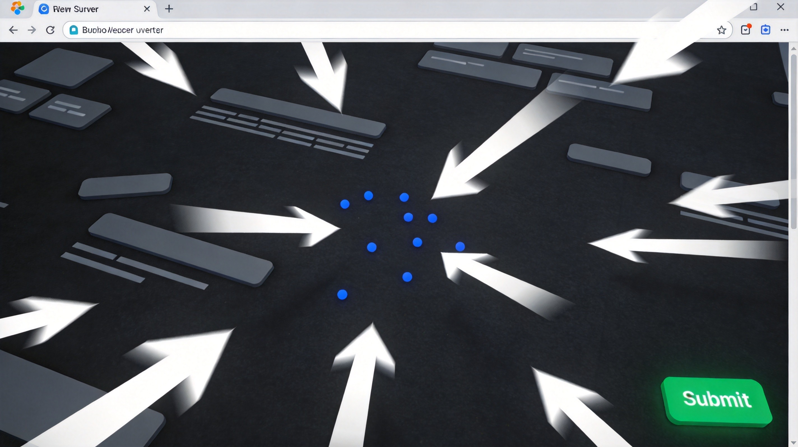
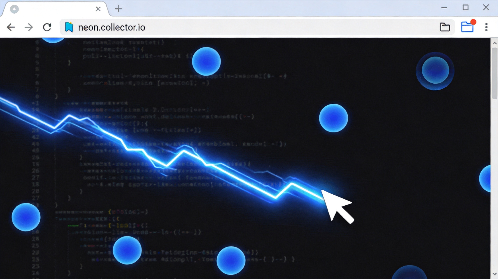
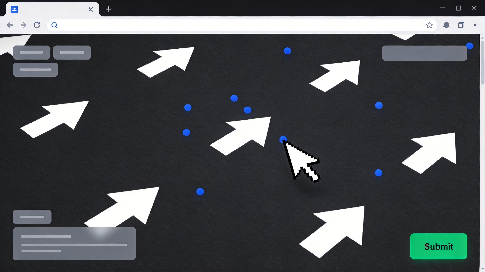
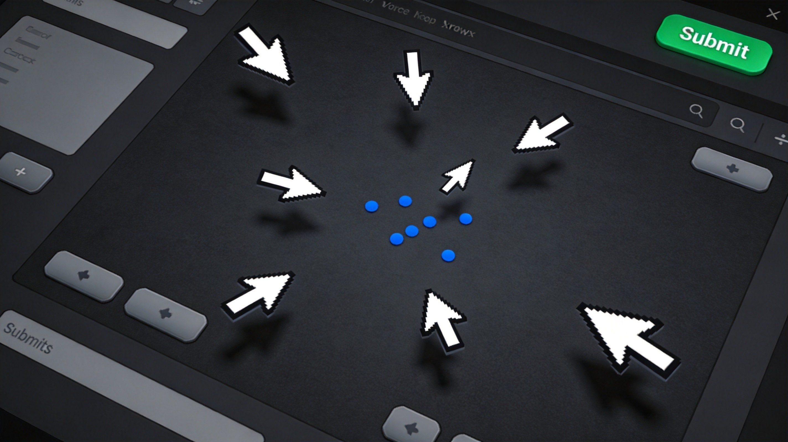

Here's a game that doesn't pull any punches with the name. Curser.io drops you into what looks like a browser window — you literally ARE a cursor — and challenges you to survive in a world of other cursors, obstacles, and hazards. It's minimal, it's weird, and it's surprisingly addictive. If you've ever wanted to know what it's like to be a tiny arrow navigating a hostile digital landscape, this is your game. Let's get you oriented.
🎯 Game Basics

What Is Curser.io?
Curser.io is a survival arena game where you play as a computer cursor in a stylized digital environment. The game draws inspiration from Agar.io's survival mechanics but wraps them in a unique cursor/systray aesthetic. You collect items to grow, avoid hazards and other cursors, and try to survive as long as possible on the leaderboard.
The Core Concept
Your cursor has a clickable area — that's your size. Collecting items makes your clickable area larger, which sounds like an advantage but also means you're easier to hit. The tension between "grow big to dominate" and "grow big and become a bigger target" is the game's central challenge.
Controls
- Mouse Movement — Your cursor follows your actual mouse movement. Direct, immediate, and intuitive.
- Click / Collect — Click on collectible items to pick them up and grow your cursor.
- Spacebar — Some versions include a dash or speed boost. Check your specific version's controls.
Game Modes
- Free For All — Everyone against everyone. Classic survival chaos.
- Teams — Group up with allies of the same color. Combined firepower and numbers advantage.
- Survival Time Attack — See how long you can stay alive. Personal best chasing.
🎮 Movement & Controls

Cursor Physics
Curser.io's movement is unique among .io games because it's directly tied to your real mouse. There's no virtual joystick, no WASD abstraction — your cursor IS your in-game character. This sounds simple, but it means your physical mouse's DPI setting, your desk space, and your actual reflexes all affect your gameplay in ways that other .io games don't simulate.
Managing Mouse Space
Here's a pro tip nobody talks about: your physical mouse has limits. If you're playing on a laptop trackpad or a mouse with a small mat, you literally can't move as far or as fast as the game might require. When playing Curser.io seriously, use a good mouse with adequate space to move. The difference in survivability is real.
Precision Movement
Unlike games where you point a character toward a destination and watch them go, Curser.io demands constant active movement. You're always steering. This is exhausting but also incredibly engaging. The skill ceiling is genuinely high because your movement is as precise as your actual hand-eye coordination.
⚠️ Hazards & Obstacles

Other Cursors
Other players' cursors are both threats and targets. A larger cursor can absorb a smaller one, but the collision detection in Curser.io works differently than in typical blob games — it's about your clickable area, not just your visual size. Understand exactly what your hitbox looks like.
Map Hazards
The Curser.io arena isn't just an open field. Watch out for:
- UI Elements — Fake buttons, fake text fields, and other browser UI decoys. Some are harmless, others drain your size on contact.
- Boundary Walls — The edges of the play area. Some versions bounce you off; others trap you; some have hazards right at the border.
- Speed Zones — Areas where your cursor moves faster or slower than normal. Use them to your advantage or avoid them in combat.
- Laser Lines — Animated hazards that sweep across the arena periodically. Predictable if you watch for them, deadly if you don't.
The fake browser elements scattered around the map aren't just decoration. Some look like helpful text boxes but damage your cursor on contact. If it looks like it doesn't belong in a game world, it probably hurts.
🛡️ Survival Strategies
The Shrink and Strike
Some players intentionally avoid collecting too many items early, staying small and agile. Then they strike at vulnerable large players when they make a mistake. Small cursors are nimble and hard to hit. Use this to your advantage — you can dance around giants that have nowhere near your agility.
Environmental Awareness
The map has safe zones and danger zones that shift over time. Watch the pattern of laser hazards, notice where UI decoys cluster, and identify the open lanes where you can move safely. Your best survival tool isn't reflexes — it's knowing where danger will be before it gets there.
Team Coordination
In team mode, stick with your teammates. Coordinated cursors are nearly impossible for solo players to defeat. Surround a target, cut off their escape routes, and absorb them one by one. The same principles apply when you're the victim — never let multiple enemies pincer you.
Growth Pacing
Growing too fast makes you a beacon for every predator in the room. Growing too slowly means you'll never compete with established leaders. The sweet spot is steady, moderate growth — large enough to matter, small enough to stay under the radar until you're ready to make your move.

💡 Pro Tips
- Use a good mouse. I know I said this earlier, but it genuinely matters more in Curser.io than any other .io game. Precision is everything.
- Watch the hazard patterns. Laser sweeps and trap placements are predictable. Learn the rhythm and plan your movement around it.
- Don't trust your eyes. Visual size and clickable area aren't always the same thing. Be cautious around players that look small — their hitbox might be larger.
- Stay near the edges strategically. In some versions, the border is a safe haven from which you can ambush passing players.
- Respawn smart. After dying, you're tiny. Don't immediately charge back into the action. Wait, observe, and re-enter when the timing is right.

❓ Frequently Asked Questions

Q: How do I grow my cursor in Curser.io?
A: Click on collectible items scattered across the arena. Each item adds to your cursor's clickable area. Larger items give more growth but are often in riskier locations.
Q: What happens when my cursor is absorbed?
A: You die and respawn as a small cursor. The player who absorbed you gains a portion of your size. Death is punishing but not game-ending — you can recover.
Q: Can I play Curser.io with friends?
A: Yes, team mode lets you group up with friends. Play on the same team and coordinate to dominate the leaderboard together.
Q: Are the fake browser elements dangerous?
A: Some are harmless decoys, but others deal damage to your cursor on contact. Treat any UI element you wouldn't see in a normal game with suspicion.
Q: How do I avoid laser hazards in Curser.io?
A: Watch for the animation warning before a laser sweeps across the arena. They follow predictable patterns — observe for a few rounds to learn the timing before committing to risky movements.
Q: Is Curser.io available on mobile?
A: Mobile support varies by version. Some mobile browsers handle it well with touch controls, while others work better with a keyboard and mouse setup.
Q: What mouse settings work best for Curser.io?
A: A mid-to-high DPI setting gives you the best combination of precision and range. Adjust your in-game sensitivity to match your physical mouse's feel. Too fast and you can't aim; too slow and you can't cover enough ground.
Curser.io is one of those games that sounds gimmicky but reveals genuine depth the moment you start playing seriously. Your mouse is your weapon, your body, and your identity in the arena. Master the movement, respect the hazards, and remember — in the cursor wars, only the nimble survive.